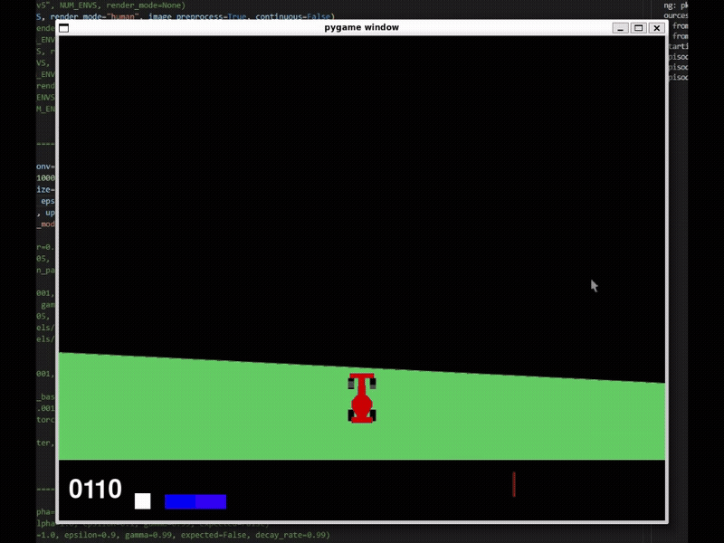

Noah Cox


I am interested in AI/ML/RL and computer graphics programming
Projects
Deep reinforcement learning


An ongoing project in which I have implemented many deep RL algorithms using Python/PyTorch to solve a range of RL environments (cartpole, lunar lander, Atari games, robotics simulations, etc.)
For more details see the GitHub repo
Real-time ray tracer


A real-time ray tracer made in C++ with OpenGL, GLFW and NVIDIA CUDA for GPU programming. It supports primitive shapes like spheres, cubes as well as custom 3D models with a range of graphical effects like reflections, hard/soft shadows, anti-aliasing, etc.
For more details see the GitHub repo